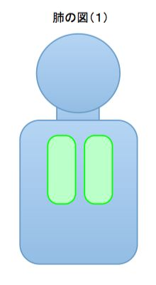
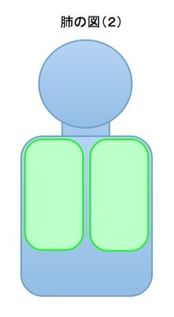
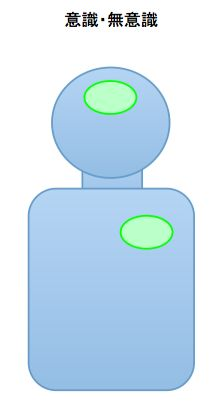
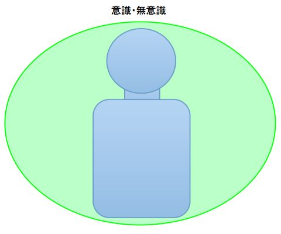
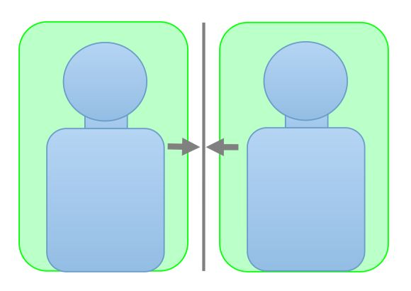
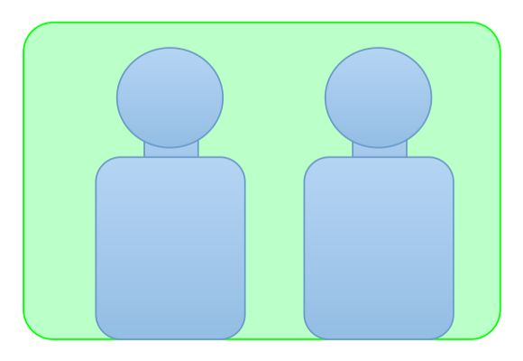

| ７つの意識革新（コンシャス・イノベーション）: あなたと世界を変える新しい意識の使い方 (ユニフォース文庫) | |
| 金子浩一 | |
| (2016) | |
世界が今、曲がり角に差し掛かっているのは誰の目にも明らかでしょう。貧困を含む経済問題、環境問題、放射能汚染など出口がない話が多くあります。なぜ出口が見えないのか。それは、自分の外側に回答を求めているからです。
この本を読んでいただくと分かっていただけると思いますが、人は自分の「意識」が思った通りの人生を生きています。「他人のせいにする」ということは、「自分の運命は自分でコントロールできない」ということを自分の意識にインプットすることになります。そして、多くの人が「自分の運命は自分でコントロールできない」と思っている限り、世界が直面している多くの問題が解決することはないでしょう。世界が直面している課題を解決するためには、具体的な解決に入る前に、まず私たち自身の「意識」を変える必要があるのです。
CI（意識革新＝コンシャス・イノベーション）とは、全く新しい形のアプローチです。これは、ビジネス、心理、スピリチュアル、ヒーリングなど全てのものに応用できます。また、社会を変えていくポテンシャルを秘めていると私は考えています。
そしてこの本では、宗教、ビジネス、健康、経済、男性と女性、霊性、人類、の７つの分野に対応して、「人間」、「自分」、「生命」、「豊かさ」、「性別」、「霊性」、「人類」の７つの意識革新を提案させていただいています。
世界の抱える様々な課題に対して何かしたいという方は多くおられると思います。特にお子さんをお持ちの方は、お子さんの将来に向けて何かをしなければと思っておられるかも知れません。しかし、社会活動やデモに参加するというのは、一般の人には敷居が高いと思います。しかし、意識を変えるということは誰にでもできます。ぜひ、あなたの意識を変えて、あなたご自身を、そして世界を、より良い方向へ変えていってください。
「意識」を変えることは、あなたが「古き人」から、「新しき人」に変わることだとも思います。「新しき人」とはどういう人か。宗教では人は「神の子」だといいます。そういう表現では、「新しき人」というのは、「神の子が神としての自覚をもった存在」という感じかもしれません。
なお、私が想像している「新しき人」のイメージをポエム風にまとめたものがありますので、それを掲載させていただきます。
＜新しき人＞
新しき人は、霊能力者ではない。
彼は、何かが見えたり、聞こえたりは、
しないかも知れないが、
必要な時に、必要なことが分かり、
必要な時に、必要なことを話し、
必要な時に、必要なことを行う。
また、新しき人は超能力者でもない。
彼は、不思議の技を行わないかもしれないが、
多くの人とともに、多くのことを成し遂げる。
また、新しき人は完全な人でもない。
彼は、自分の中に弱さや欠点があるからこそ、
他者と繋がることができることを十分に理解している。
また、新しき人は賢者でもない。
彼は、その智慧が自分からではなく、
源（宇宙、神）から来ていることを
誰よりも良く理解している。
ゆえに、古き人は新しき人を理解できない。
なぜなら、自分と見た目が変わらないから。
しかし古き人が常に不安と恐怖の中にいるのに対し、
新しき人は、常に愛と安らぎの中にいる。
なぜなら、 自分の強さが、
源（宇宙、天）に起因することを理解し、
必要な時に必要な助けがくることを
常に確信しているのだから。
天の御心が行われますように、と
かつてイエスは祈った。
新しき人の祈りも同じである。
なぜなら、彼は、自分が直面する全ての現実が、
天の御心であり、自分の糧であることを、
誰よりも深く理解しているのだから。
2016年7月1日
金子浩一
本屋に行けば「潜在意識」や「意識」に関する本がたくさん並んでいます。またネットとかにも、「潜在意識」や「意識」に関する情報が数多く存在します。しかし、とても根本的な話が抜けていると私は感じています。その話をする前に少し実験をしてみたいと思います。なぜならこの実験をすると多くの方がなるほどと納得していただけるからです。
次の図は肺の図です。この図をみながら一度深呼吸をしてみてください。

その次に、違う肺の図をみて深呼吸をしてみてください。肺というものは身体中に目一杯に広がるそうなので、こちらの方が実は正しい姿なのです。

たぶん、後者の方がかなり深い呼吸ができたと思います。あまりの違いに驚かれたかも知れません。これは何を示しているのかというと、私たちが「肺」というものをどう認識しているかで、呼吸の深さがこれだけ大きく変わるということなのです。
では話を「潜在意識」や「意識」に戻しましょう。あなたはご自身の「潜在意識」や「意識」をどう認識していますか。セミナーなどでうかがうと多くの方が以下のように書かれます。

しかし、少数ながら次のように書かれる方たちもいます。つまり「潜在意識」や「意識」に対する範囲の認識が全く異なるのです。

「潜在意識」や「意識」が自分の中に存在すると認識されている方は、暗黙のうちにご自身で、「潜在意識」や「意識」は自分の中でしか働かないと思い込んでいます。しかし、「潜在意識」や「意識」が自分を含めた広い範囲で認識している人は、「潜在意識」や「意識」がもっと広い範囲で活動でき、他人や環境、運命までを変えることができると理解しています。そしてこの差はとても大きく、肺の図で実感していただいたと思いますが、「意識」は自分の認識の範囲内でしか働きません。
もし、あなたの意識が「「潜在意識」や「意識」が自分の中だけにしか影響できない」と思っていたとしたら、「潜在意識の活用」とか「意識の活用」など十分にできるでしょうか。多くの本や情報に根本的に抜けているのはこの点だと私は考えています。そしてそれは、単に頭で理解するだけは不十分です。なぜなら、それは自分が無意識的に認識している話ですから。だから、体験を通して、心と身体で納得することが、とても大切なのです。
「潜在意識」や「意識」の活用に関して、それをどう認識するがとても重要であることを説明させていただきました。それではその認識とはどのような要素があるのでしょうか。私は、「範囲」、「定義」、「レベル」の３つだと考えています。
まず「範囲」というのは簡単で、「意識」は自分の中にだけ働くという思い込みを外すことです。「７つの習慣」などで説明されている「インサイド・アウト」をきちんと認識するといってもいいかも知れません。自分の意識が、現実を作っているということを正しく認識するという話です。
セミナーでやっている基本ワークのひとつに「商品やサービスを売り込む」というものがあります。二人一組になって、ひとりがセールスマン、ひとりがお客さんになって「商品」とか「サービス」を売り込みます。
これには少しコツがあって、最初は普通に説明を行い、２回目は「相手と一体化するイメージ」で説明します。「相手と一体化する」といっても分かりにくいかも知れませんが、「相手が買う気になったつもり」とか、「相手が買って喜んでいる姿をイメージする」とか、気の感覚とかが分かる方には「気で相手を包み込む」みたいな感じで考えてください。そして、お客さん役の人はご自身の感じる感覚をただ感じていただき、終わった後でフィードバックしていただきます。
図で示すと、一回目は次の図のようなイメージであり、

二回目は次の図のようなイメージです。

このワークを行うと多くの方がその違いを感じていただけます。お客さん役の人の感想で多いのは、次のようなものです。
・最初は無理やり売られそうで身構えたが、２回目は安心して聞けた
・２回目は本当に買う気になった
・２回目は、最初の時と表情や声のトーンも変わって、良い印象だった
また、セールス役の人は感想というより、説明の内容がかなり変わってきます。
・機能や細かい説明が少なくなり、いかに楽しいかの説明になる
・長い説明が無くなり、短い説明になる
・防衛的な説明（何か言われたときのための表現）がなくなり、説明がシンプルになる
最初は延々と長く説明された方が２回は数十秒の説明で終わってしまったというケースもありました。しかし、お客さん役の人はその数文の説明の方が行きたくなったと感じられたそうなので、人間というのは、そういうものなのだと思います。
このワークのバリエーションは、ビジネスでは「人に指示をする」、「クレームを聞く」みたいなものもありますし、家庭向けにも応用できます。このワークを体験された女性が子育ての前に知っていたら良かったと言われたのがとても印象的でした。
今度は「定義」の話を見て見ましょう。意識がそのことをどう認識しているかという話です。その中で特に重要なものは、意識が「自分」というものをどう認識しているかということです。
セミナーでやっている基本ワークに、「自分の役割を決める」というものがあります。先ほどのワークと同じで二人一組になって話をするのですが、その時にたとえば「自分は医者である」とイメージして相手の話を聞きます。相手は、普通に健康のことを相談します。これにもコツがあって、最初は普通に相談を受け、２回目は「自分は医者である」とイメージして話を聞きます。白衣を着ている姿をイメージしてもいいかも知れません。このワークでも多くの方がその違いを感じていただけます。
相談者役の人の感想で多いのは、次のようなものです。
・安心して相談が出来た
・なるべく具体的な症状を説明するようになった
また、医者役の人の感想は次のようになります。
・相手の病状を解決したくなった
・なるべく具体的な話を聞きたくなった
このワークで分かることは、「意識」が自分というものをどう認識しているかというものを変えると相手の反応が変わるということです。
人は、生まれ持っている「自分の本質（セルフ）」となる部分の上に、「他人や周囲の評価」で「自分の姿」を作り上げています。いわゆる「個性（エゴ）」という部分です。小さい時に親からこう言われたとか、学校の成績がどうだったかという、他人からのバラバラの評価の寄せ集めが自分のイメージを作り上げているのであって、それは「幻想の自分」にしか過ぎません。よく「自分探し」を長い時間される方がありますが、たぶんそのほとんどが無駄に終わると思います。なぜなら、多くの人の中には「幻想の自分」しかないのですから。「自分の本質」と「他人や周囲の評価」だけでは、本当の自分というものが存在しません。ここで欠けているのは、「自分が定義する自分」なのです。
現代人の多くは「自分が定義する自分」というものを持っていないのですが、一部例外があります。ひとつは憧れの人物像を持っている人です。たとえば「坂本龍馬のようになりたい」という人は坂本龍馬の人物像が自分を定義するツールになっています。もうひとつは夢を語る人です。こういう人の場合、夢を語るという行為が自分を定義するツールとなっています。
意識の「レベル」といっても分かりにくいかもしれませんが、一言でいうと「見えない世界」を意識する、ということです。ここでは「気」と呼ばれる世界の話だけにポイントを絞って説明させていただきます。
皆さんは「気」というと何を思い浮かべますか。テレビで奇跡的なことをやっている気功師の姿でしょうか、アニメで気を使って活躍する主人公でしょうか、風水を使って運気をあげるインテリアでしょうか、はたまた旅行先で訪れるパワースポットでしょうか。これらは、ある意味、全て正解であり、全て不正解であるものです。正解というのは、気というものをみんな自分の理解する範囲で説明しているので、それはそれで間違いではありません。が、そのどれもが全体を言い表していないので不正解とも言えます。
私は、「気」というのは世界に満ち満ちているエネルギーであり、意識により形を与えられ現実を作っていくというものだと考えています。古代ギリシャの思想家が、「この世界はエーテルと呼ばれるものに満たされている」と考えていたのもそれであり、また近代になって、オーラや他の表現も使われることになりました。またインドではプラーナと呼ばれるなど、こういうエネルギーの概念は洋の東西を問わず存在していました。また、こういうエネルギーをうまく使える人がいたのも共通しています。
日本では、痛いときとか思わず手を当てる、とか、治療することを「手当て」といいます。ヨーロッパでも「ロイヤルタッチ」といって、王様が手を当てると病気が治るという伝説が伝わっていたり、治療の力がある人のことを「緑の指を持つ」（気＝オーラの色が緑）と呼んだりしていました。こういうもの全てを含めたものが「気」という存在ではないかと私は考えています。
このように一般に存在する気のイメージがバラバラで、偏った説明をすると誤解を生じるので、私はこの世界に満ち満ちている気のことを「ユニフォース」と名付け、区別しています。これは単純に説明上、区別した方が便利というだけであって、名称はどんなものでも良いと思います。そして、そのユニフォースに関しては、日本がもともと優れている面があるのです。なぜなら日本語と日本文化に深く根を下ろしているからです。
まず日本語からみてみましょう。日本語の中には、気という単語を使った数多くの表現が存在しています。気という言葉は中国から来ていますが、中国語には健康や武道の関係としての気という言葉は存在するものの、日本のように一般の概念としての使い方はないといいます。
普段あたり前に使っているので、日本人自身がよく理解できていませんが、気を精神エネルギーとか、生命エネルギーみたいなイメージで次の表現を理解しようとすると、それが良く理解できると思います。
気になる：気の固まりが発生する
気にする：気の固まりが発生する
気が済む：気の固まりが消滅する
気を落とす：気の固まりが下に沈む
気を失う：自分の気がなくなる
気が遠くなる：自分の気が去っていく
気に入る：気の領域に相手が入ってくる
気に入らない：気の領域に相手が入らない
気が強い：強い気の領域を持っている
気が弱い：気の領域が弱い
このようにイメージしてみると、気というものがあたかも具体的存在のように思えてくると思います。たぶん、日本人の祖先は、もっと身近に気という存在を実感していて、このような表現を言葉の中に伝えて来たのだと思います。
さらにいえば、文化や宗教にも、気という概念を使いこなしていることをみることができます。生命エネルギーが高い（イキのいい）食べ物を良いとし、居住空間に生命エネルギーを取り込む、箱庭や生け花みたいな習慣を好み、と様々な面で、気を良くするような文化を育んできました。
ケガレを払い、キヨメを大事にする日本古来の神道、自然に丹田というセンターにエネルギーがあつまる座禅というシステム、気というエネルギーを体で理解する合気道などの武道、エネルギーが体に自然に充実するために考え抜かれた古典の芸道、そのどれもが、日本の霊性の本質がエネルギーの活用にあることを示していると、私は考えています。ただ、残念なことに、日本人自身がそれを理解できていません。
さらにいえば、雰囲気にながされる日本人の気質もそれを物語っています。日本人にとって、ルールや法律という形になったものより、他人の感情とかエネルギーに大きく影響されます。ですから、それが良い方に働くと災害時にも「お互い様」という感覚で、礼儀正しく親切な対応ができますし、それが悪い方に働くと、誰かがルールを破ると皆がルールを破る、といった形になってしまいます。
外国のサイキックの方が、日本に来ると集合エネルギーの海に溺れそうになる、と表現されていましたが、その感覚は私には良く分かります。外国では、個と個との間のエネルギーは明確に分かれているのに対し、日本では個と個との間のエネルギーの区分けがあいまいで、全体のエネルギーに影響されることが多いからです。
また、歴史的な流れから見ても気には意味があると思います。シュタイナー教育という言葉を聞かれたことがあると思います。ドイツの神秘思想家シュタイナーが提唱した教育法で、世界中に広がっています。彼の教育法は、人間が、肉体の他に気の体、感情の体、思考の体という体を持っており、肉体が０～７歳、気の体が８～１４歳、感情の体が１５～２１歳、思考の体が２２～２８歳に成長するという思想を背景に構築されており、他の教育法とは一線を画すユニークなものになっています。
人間の体の成長がもしそうであるなら、社会の進化も同じではないかと思います。肉体の体、すなわち物質文明が成熟して次にくるのは、気の体、気の文化、気の文明の時代ではないでしょうか。そして、それを象徴するかのように、現代には気に関する情報が世界中に広がっています。
マンガやアニメの中では、気を操る主人公達が活躍し、全世界の子供達を熱狂させていますし、大人の世界では風水によるビジネスの発展を真剣に考えていたりします。太極拳や合気道といった気を扱う武道は、単に武道としてだけではなく、健康法としても世界的に広がっており、エネルギーの高い場所であるパワースポットや、エネルギーの高い宝石であるパワーストーンは日常生活の中にとけ込んでいます。
そういうことを考え合わせて、私は次の時代は「気＝ユニフォース」の時代だとも考えています。もちろん、数十年から数百年つづくというイメージでいう時代なのですが。
以上、意識の革新の「範囲」、「定義」、「レベル」の３つの要素をみてきましたので、次は７つのテーマに関しての意識革新について考えてみたいと思います。
意識革新１：「人間」の意識革新
人間の「内なる神性」と「自分の個性」の２面性を知る
過去、宗教やスピリチュアルの分野で行われてきたのは、この「自分」の定義の前提となる「人間」とか、「神」とかいうものの定義だったのです。宗教やスピリチュアルにおける「人間」の定義には様々なバリエーションがありますが、なるべく多くの宗教やスピリチュアルで共通するパターンをまとめると以下のように２つの部分になります。
A：内なる神性（神の子、愛、仏性、真我、セルフ）
B：自分の個性（個性、エゴ、罪、カルマ）
宗教やスピリチュアルで最も大切なことは、人間というものの認識だと私は考えています。
そして現代の発想で一番問題なのは、本来人間が２つの面を持っていると認識しておらず、ひとつの側面で把握しようとしている点です。それは宗教やスピリチュアルでも同じです。あるものは人間が完全だといい、あるものは人間が不完全だからこそいいという、当然意識は混乱します。この意識の認識の混乱こそが多くの問題の始まりなのです。
昔はモデムとかソフトとかを用意して複雑な設定をしなければインターネットに接続できなかったのに、今はスマホひとつあればインターネットに簡単にアクセスできます。宗教やスピリチュアルでも同じです。伝統を重んじることも大切ですが、難しいことをしないといけないというのは単なる思い込みであり、より簡単で確実な方法をとればいいのです。
それは何か。それは人間には２つの側面があることをきちんと認識して、日常の生活の中で「内なる神性」の部分をきちんと活用するということです。少なくとも、この人間の二面性をきちんと理解できるだけでも大きく違います。自分の欠点や短所、不完全さの意味を正しく理解でき、正しく向き合うことができるようになります。同時に、自分の素晴らしい部分、聖なる存在としての部分、仏性というものにも気付けます。
たとえば、人間は不完全なものとか罪の存在だとだけ認識してしまうと「意識」はそのように行動し、そういう社会を作り出してしまいます。逆に、「神の子」のような聖なる存在だと「意識」が認識しようとすると、現実の人間や人間の行動とのギャップに混乱して、「意識」は混乱した社会を創り出してしまいます。大切なことは、人間は２つの側面を持つ存在であることを十分に「意識」に認識させることなのです。
それでは、既存の宗教で言われていることと、この人間のモデルを少し比べてみましょう。
キリスト教では「愛」というものの重要性を説きますが、もともと旧約聖書において人というものが「罪」の存在であり、十戒という教えを中心とした戒律で飼いならさないといけないものだという発想があったためだと思います。つまりBの部分中心の話です。
イエスの宗教改革の目的はBの部分しかなかったユダヤ世界にAの部分を持ち込むことでした。旧約とか新約とかいうのはもともと「契約」、すなわち「神」と「人」との契約の意味なのですが、社長と社員の雇用関係みたいであった古い契約を、父と子のような親子関係であると彼は再定義したのだと私は考えています。
そして、人の中に父なる神とのインターフェースである聖霊が入り、父（聖霊）であるAと、自分の個性であるBを意識して区別していたのだと思います。またAは「愛」という言葉で認識されているともいえます。もともと人というのはBの「罪」の存在であったものに、「愛」の存在であるという意識の定義を行ったという形です。彼自身が、「主なる神を愛せよ、隣人を愛せよ、これに全ての律法がかかっている」と言い切っているぐらいですから。
次に仏教をみてみましょう。仏教といってもブッタの教えと今の仏教はだいぶ違います。
ちなみにブッダが説法した内容は阿含経として現在に伝わっていますが、彼は霊を語ったこともありませんし、不思議なことを語ったこともありません。どちらかというと哲学的な存在論を語っています。彼は人が「苦しみ」から抜け出すのにどうしたらいいかを色々と考え、そして物には４つの存在形態があることに気付き、「苦しみ」を消す「解脱」という方法と、「解脱」した境地である「涅槃」を説いたのです。
４つの存在形態というのは、「それ自体が存在する」、「何かに依存して存在する」、「依存しているものを消去すると消去する」、「それ自体を消去する」の４つのパターンです。これを「四諦」といいます。苦しみというのはそれ自体が存在するものではなく、何かに依存して存在しています。その依存するものとは「私のものと思う執着」です。（この依存関係のことを「縁起」といいます。）
この「私のものと思う執着」を無くせば「苦しみ」が無くなり、「解脱」して「涅槃の境地」に至ります。これをまとめると「諸行無常（すべてのものは変化する）」、「諸法無我（変化するものを「私のもの」とすることが苦しみの原因である）」、「寂静涅槃（そう理解すると涅槃にいたる）」という表現になります。
密教は仏を通じてAとつながる方法を取ります。真言（マントラ）や印などを使って仏と一体化し、Aを感じるという訳です。浄土宗、浄土真宗はあまり学問のない一般大衆に教えを説いたため、それをシンプルにし、仏を阿弥陀仏ひとりに限定し、かつ真言も「南無阿弥陀仏」だけに絞りました。
禅宗は逆に知識階級である武士に教えを説いたため、少し高度なアプローチを取ります。Bをなくして、Aを体得するアプローチ、いわゆる「悟り」です。本当の「悟り」は、Bを無くしてAを体感するまでの前半プロセスと、Aを体感した後にグラウンディングしてBを整備する後半プロセスがあるのですが、一般に悟りを語っている人は前半プロセスだけの人が多いように思います。
このアプローチは、実は色々とバリエーションがあります。その代表的なものが「自己観察」とか「自己想起」と呼ばれるものです。クリシュナ・ムルティとかグルジェフなど多くの人が説明しています。原理は簡単、Bである自分を観察すると、観察者の主体であるAを体得できるということです。
自分で自分の考えや行動を観察することに違和感を感じるかも知れませんが、慣れると結構簡単です。私自身が若い頃、自己観察を一時期やり続けていて、世の中の全てが光り輝いている状態を体験したことがあります。また「ヒマラヤ聖者」シリーズや、その影響を受けている欧米のスピリチュアル思想では、Aを真我と呼んでいますし、あと南米の呪術者の話にある「トナール」と「ナワール」も、このAとBと理解すると分かりやすくなります。（カルロス・カスタネダという作者が作り出したドンファンという呪術者が実在したかどうかは議論の分かれるところですが。）
このように、キリスト教をはじめ仏教、その他スピリチュアルの教えのほとんどが、実はこのAとBの構造になっているのです。
人類の進化という面で、少しこの２面性を考察してみましょう。
太古の時代、人間はまだ個性の発達が低く、内なる神性だけが表に出ていた時代があったと思います。ちょうど赤ん坊の無垢さが表に出ている時代です。コンピュータの世界で例えると、端末のレベルが低くてメインの大型コンピュータが働いていた感じになります。超古代、いわゆるレムリアとかムーと呼ばれた時代に人類はそうだったのではないかと私は考えています。
A：内なる神性：表面に出ている
B：自分の個性：自我レベルが低い
そして個性（自我）が成長するにしたがい、内なる神性は後ろに隠れました。そうしないと個性（自我）が発達しないからです。コンピュータの例えると、大型コンピュータから離れてパソコンが普及したイメージだと思います。パソコン側ですべての処理をするため、大型コンピュータとは一度、切り離されました。この時代がアトランティスから現代へと続いています。
自我は他の自我と摩擦を起こします。争い、戦争、混乱が発生しました。今まで「内なる神性」にしたがい平和と安定の日々を暮らしていた人々にとっては悪いことが起こったように感じたでしょうし、人類が退化していると理解した人も多かったと思います。しかし、大きな視点でみると宇宙の進化に過ちはありません。全て必要なプロセスだったのだと思います。
A：内なる神性：後ろに隠れる
B：自分の個性：自我レベルが発達（摩擦と混乱）
では、次の時代はどうなるのでしょうか。たぶん、コンピュータの例でいうとサーバー（大型コンピューター）とパソコンがインターネットでつながるのと似たような状態になるのではないかと思います。
「内なる神性」が表に出て、その「内なる神性」経由で全ての宇宙のリソースにつながるような時代です。しかし、インターネットでサーバーが主ではなくパソコンが主であるように、「自分の個性」が主であり、それを「内なる神性」がサポートしてくれる、そういう形の「新しい人」が増えてくるのだと思います。
ちなみに、ワンネスというと「自分の個性」を無くすことだと勘違いされている方が多くいます。私は、それを「昔のワンネス」とか「子供のワンネス」とか呼んでいますが、人類は進化しています。昔のワンネスに戻る必要はありません。インターネット型の「新しいワンネス」を目指すべきではないでしょうか。
それから「内なる神性」が後ろに隠れたときに、他の見えない存在がサポートするという形がとられました。いわゆる神々とか天使と呼ばれる存在です。「内なる神性」が隠れている時代ならばやむを得ない面もありますが、新しい時代では「外部への依存」を強めることはかえってマイナスとなります。
適正な宗教、スピリチュアルを判断する方法は簡単です。外に答えを求めるか、内に答えを求めるか、ただそれだけです。外に答えを求めだすと、宗教組織を作り、それが集金システムや権威システムとなったり、現世的な圧力団体となったり、カルト化していきます。そして、最終的には、あまり適正とは言いがたい形となっていきます。
かといって、内に求めるといっても、ただ自分で独自に瞑想をしたり、内観をしても誤った道に行く可能性もあります。それは良い指導者に付くとかそういう話ではなく、きちんと原理を理解しているかどうかという話であり、正しく理解できていないと、変に「自分の個性」のエゴの部分が肥大化したり、ミスリードさせたりしてしまいます。
そういう背景もあり、CI（意識革新）ではひとつのアプローチとして誘導瞑想をご提案しています。もちろん、これだけが適正という訳ではありません。上記の背景をきちんと踏まえたものであれば、どのようなアプローチでも良いと思います。
CI(意識革新）瞑想の原理は簡単です。過去に宗教やスピリチュアルが行ってきた「内なる神性」を意識で明確にイメージして、それを誘導瞑想によって活性化させるというアプローチを取ります。
「内なる神性」とは、イエス＝キリストが親子関係として定義した神や聖霊でもあり、ブッタがエゴを消し去ったあとの仏性でもあり、自己観察や自己想起で現れてくる本当の自己でもありますが、そのアプローチを統合してシンプルにし、意識の中で明確に「内なる神性」をイメージします。
そして「意識」が「人間」をそのようなものだと認識すると、「意識」はそれに従って動くようになります。既存の宗教やスピリチュアルのアプローチと少し違うのは、「内なる神性」を「意識」の中で明確に定義する点です。そうすることによって、キリスト教でいう「聖霊に満たされた状態」になり、仏教でいう本当の意味での「悟り」の状態になります。
ちなみに「聖霊に満たされた状態」というのは、不思議なことができたり、見えないものが見えたり聞こえたりすることではありません。また、引き寄せの法則などで大金持ちになることでもありません。必要な時に必要なことができ、必要な時に必要なことを話し、必要な時に必要なサポートが入る状態であり、かつ心が安心立命し、幸福で霊や魂が正常に進化している状態のことです。
●瞑想の手順
①「内なる神性」と「個性（エゴ）」を明確に区別する
②「意識」に「内なる神性」を明確に認識させる
③「内なる神性」を活性化させる
④「内なる神性」と対話する方法を体験する
祈り：「内なる神性」へのリクエスト
瞑想：「内なる神性」からの回答
⑤日常の生活においても「内なる神性」を意識し、「内なる神性」とともに行動する
意識革新２：「自分」の意識革新
自分（個人、組織、サービス）を明確に定義する
宗教＝「人間」の定義というところから入ったので、今度はもっと現実に即した問題、まずはビジネスです。突き詰めると、宗教が「人間」の定義であったように、ビジネスは「自分」の定義なのです。ビジネスにおいては、会社などの組織、商品やサービスも含めた「自分」の定義をすることが最も大切なのだと思います。
ビジネスの詳細に関しては、既に様々な情報が氾濫していますので細かい話はしません。ここでは「自分」の定義と、実際に活用するためのマーケティングのヒントをご説明させていただきます。
最近はビジネスの世界でも経営理念とか経営哲学の重要性が認識されるようになってきました。英語ではクレドと表現しますが、Ｐ＆Ｇがこのクレドによって安定した経営を進めているということでも有名です。Ｐ＆Ｇでは、毎年一回各地の責任者が集まり、クレドの内容を喧々諤々吟味し、時代に合わせて修正すべきところは修正し、それを各国に持ち帰って経営の指針とすると聞いています。ですから、どの国でも同質のサービスの提供が可能なのでしょう。
経営理念とかクレドとか呼ばれるものは経営の根幹を成すものであり、本来最も重要なものです。企業が安定的に長期に経営していこうと思えば無くてはならないものです。企業が永続的に繁栄しようと思うと、どうしても経営理念の明確化が必要となってきます。日本でも長く続いている企業には、商売の「家訓」みたいなものがあります。
また明文化されていなくとも、企業の性格を決める要素もあります。企業風土と呼ばれるものです。企業風土というのは、創業者やトップの意向が反映されるものもあれば、経営理念やクレドといったもので規定されるものもあるでしょう。また、企業の歴史によって自然に育まれるものもあると思います。経営風土とか企業のもっている雰囲気や運気を決める要素はいくつかあります。ひとつはその組織体のトップのもつオーラというか、雰囲気、運気です。
このようにその企業や組織が「自分」を定義するものが大事であり、それがブランドとなります。そういう意味では、ブランドは対外的な意味合いよりも、自らを規定するものとしての意味合いが強いのかも知れません。先ほどのワークで、自分を「医者」だとイメージしたら、相手と自分の反応が異なるのと全く同じ原理です。
「自分」を定義した後に必要なのは、それをフィードバックするための定義です。評価の物差しの決め方といっても良いかもしれません。私は戦略とかマネージメントというのは突き詰めると「目標と評価の物差しを決めること」だと考えています。日本では人間の管理することをマネージメントと呼ぶ傾向にありますが、本来はもっと広義な意味を含んでいて、戦略とも関連しています。
例えば、企業の評価の物差しは日本では「売上げ」になっています。そして、この「売上げ」を物差しにするということが問題を引き起こしています。たとえば製造業の場合、売上げが１００億円あっても粗利（利益）が１０億円という感じなのに対し、ITやソフト産業は、売上げは２０億円でも粗利（利益）が１０億円あるみたいな感じになります。もし、「売上げ」だけで判断すると、ITやソフト産業は育ちにくいでしょう。そして、現実もその通りになって、日本は米国の後塵を拝しました。
このように「目標と評価の物差しを決めること」は企業にとって、「自分」定義に次いで大切なことなのです。今回の主題ではないので詳細は割愛しますが、ビジネスは「自分」を定義することであり、その「自分」をさらに明確にするために、「目標」と「評価の物差し」を定義することが要点ではないかと考えています。
会社や組織の話をしてきましたが、この話は個人でも同じです。特にビジネスされている方は、あなたご自身のクレド＝「パーソナル・クレド」を作られることをお勧めしています。
ちなみに「パーソナル・クレド」という呼び方ではありませんが、「７つの習慣」においても、「ミッション・ステートメント」として自分の人生の目的や目標を決めることを推奨されています。また、最近のセミナーなどで行われている自己紹介文を作ることも、同様の効果があると思います。
この「パーソナル・クレド」をスマホに入れて、毎日見て確認し、必要ならばいつでも練り直せるようにiPhoneアプリも用意しています（App Storeで「パーソナルクレド」で検索いただければ出てきます）。アプリでは、以下の項目を設定できるようになっています。
・人生の目的（志）： 人生の方向性の設定。
・目標（ゴール）： ゴールの設定（具体的に）。
・原理と原則： 人生の基本的スタンス。
・アファメーション： 自分に関する宣言。
・宣言文： 対外的な話に関する宣言。
・自己/ビジネス紹介： 総合した自分自身を定義。
iPhoneの場合はこちらから：パーソナルクレド - Koichi Kaneko
概念的なビジネスの話よりも、自分のビジネスや集客、マーケティングの方が知りたい方もおられると思うので、そのヒントを書いておきます。まず、最初の意識の話を整理すると以下のようになります。
・あなたの意識が相手と一体化しているかで相手の受け取り方がちがう
・相手と一体化すれば、相手への伝え方のメッセージが変わる
・あなたの感情や思いも相手にダイレクトに伝わる
・自分や自分のサービスをどう認識しているかで相手の反応が違う
では集客やマーケティングでどうしたら良いでしょう。簡単にいえば、「あなたの自身やあなたのサービスを明確に定義して、相手と一体化する感じで情報発信をする」、これに尽きるのです。あとは自転車の乗り方を覚えるのと同じで練習あるのみです。
集客やマーケティングのネット情報や本を読むと色々なことが書いてあります。そして、そのほとんどがこの内容に集約されます。たとえば「商品の性能や機能を説明する」のでなく、「相手の利益や喜んでいる姿を想像しながら説明する」みたいな話はこれにつながっています。
世の中には多くの集客やマーケッティングに関する情報があります。そしてその多くがきちんと実行できたらとても有益なものです。しかし、その本質的なところを理解せずにやってもポイントを外してしまいがちです。情報があり過ぎると逆に混乱すると思いますので、このポイントだけをシンプルに考えてみてください。
あとはマーケティングの公式、「売上げ＝認知数×集客率×購入率」に従って、現実的な手を打つだけです。その話も詳しくなりすぎるのでここでは割愛させていただきます。
もう一度、まとめて整理しておきますと以下のようになります。
あなたのすべきこと＝「あなたの自身やあなたのサービスを明確に定義して、相手と一体化する感じ（楽しさ、喜びなど感情中心）で情報を発信する」
もちろん、最初のワークだけでも、営業、サービスの全ての人に応用ができます。全てのセールスマン、接客業、クレーム対応に大きな効果があり、「自分」の定義までいかなくても、幅広い範囲で、ビジネスを変えることが可能だと私は考えています。
意識革新３：「生命」の意識革新
自分の身体の生命力を認識し、身体の声を聞く
身近な話でビジネスの話をしましたが、同じく身近なテーマとして、健康や医療、癒しの話を考えてみたいと思います。なぜ、これだけ医学が進んでいるのに病気の人があまりにも多く、また増えていくのでしょうか。それは、意識の「生命」に対する定義が間違っているからだと私は考えています。
そのポイントは何か。意識が「病気」にフォーカスしているから、「病気」という現象のみが増えているという点です。逆に「生命」とか「自己治癒力」に意識をフォーカスさせれば、全然違う現象が出てきます。
意識に「生命」とか「自己治癒力」というものに気づいてもらうためのワークとして、「身体の声を聴く」というワークを私はやっていますが、それだけで多くの不調が軽減されます。しかし、それは私が云々ではなく、もともと身体自身がどうすれば治るかを知っているからなのです。逆に、私たちが頭で考えて、身体の声に耳を塞いでいるから病気になるだけなのです。
私は、癒しというかヒーリングに関して、２人の日本人が大きな意識変革を起こしたと考えています。橋本操体の橋本浩三氏と、野口整体の野口氏です。橋本氏は「楽な方に動く」という身体の望みにしたがうことを提唱し、野口晴哉氏は「病気は身体が強くなるためのプロセスである」と喝破され、生命力を高めて自然治癒の動きを引き出す「活元」などの手法を提唱されました。二人とも表現は少し違いますが、「身体」や「自然治癒力」の力を信じるアプローチを提唱されています。
海外においても「自然治癒力」の話をされる方は多くおられますが、身体の声を聴くという方向に踏み込んだ方はあまりおられないように思います。CI(意識革新)では、これをさらに踏み込んで、身体の声を聴き、エネルギーを高めるという点だけに絞っています。
Ｅ・ Ｇ・フリッカーというヒーラーは、アラブの国王やハリウッドスターといった世界中の人々を霊的治療で救った世界的ヒーラーですが、彼いわく、人間の細胞は生命力というエネルギーを貯めるバッテリーみたいなものであって、人と人が触れ合うことによりバッテリーが供給されるといっています。人は、エネルギーが多少不足しても自然に回復しますが、ある限度を超えると自分で回復できないようになります。それはちょうどクルマのバッテリーがあがったような状態であり、一度、他のクルマから充電してあげる必要があります。この他のクルマに相当するのがヒーラーです。
ちなみに彼は、病気について詳しく知りすぎると意識が病気に集中しかえって病気を悪くするといって病気について詳しい話は知らないようにしているとも言っています。話を整理すると、以下のように表現できるかもしれません。
・医療（メディカル）：病気にフォーカスする手法
・治癒（ヒーリング）：生命にフォーカスする手法
少しだけ具体的な話をしてみたいと思います。
・身体の声を聞く方法
・身体のエネルギーを高める（調整する）方法
まず「身体の声を聴く」方法ですが、やり方は簡単、相手の身体の一部を手で持ち、相手の身体が動きたがっている方向を感じながら動かすだけです。たったこれだけのことを数分するだけで、痛みが和らいだり、軽減されたりします。
少し上達すれば、これを気の身体についても行います。この時のコツは、相手のエネルギーを揺するように動かしてあげることです。よく宇宙のエネルギーを使うと相手のネガティブなエネルギーを受けないという方がおられますが、実際はほとんどの方が相手のネガティブなエネルギーの影響を受けてしまっているように感じます。宇宙のエネルギーを使うにせよ、自分のエネルギーを使うにせよ、自分を通してエネルギーを供給する以上は受けて当然なのです。
そうではなく相手のエネルギーをブランコのように少しずつ揺らしていくイメージをすると、少しずつですが相手の方のエネルギーが動き出すようになります。そして、流れが強くなってくると、自然に相手の問題の部分にもエネルギーが流れ出します。このような形をとれば、相手のネガティブな受けることもあまりありません。
そしてこの方法には先の身体に聞く方法と同様に大きなメリットがあります。それは何かというと、相手の身体に対して「あなたには自分を治せる力がある」というメッセージを送れるということです。
多くの癒しやヒーリング技法においては、ヒーラーなりセラピストは「相手を治してあげよう」と頭で思っています。それは裏返せば「あなたは病気だよ」というメッセージを心やエネルギーのレベルで送っていることにつながります。そして、念の強いヒーラーなりセラピストがそれを行うと、クライアントの身体がそのメッセージに応えてしまい病気から抜け出せないということが起こってしまいます。この技法の良いところは、相手の身体の声を聞いたり、相手のエネルギーを動かしたりすることで、心やエネルギーのレベルにおいて無意識的に「あなたには自分で治せる力がある」というメッセージを送れることなのです。
また女性の場合は、子宮にエネルギー的な問題をかかえている方が多いので別枠で子宮ワークの話をさせていただくこともあります。子宮は男性エネルギーが充足してこそ健康になるのですが、頭が無意識的に男性エネルギーをブロックしてしまっているとエネルギーが取れず、子宮の働きが悪くなります。
解決方法は簡単、子宮に男性エネルギーを取る事を許可してあげるだけです。別に肉体が触れていなくても数メートルぐらいの距離なら十分に男性エネルギーを吸収できますし、また必ずしもパートナーから男性エネルギーをもらう必要もありません。これは純粋に生物レベルの食欲みたいなのと同じ話なので、あまり倫理とか宗教とかの入り込む話ではないのです。実際にワークをやってみると、子宮が怒っていたとか、拗ねていたとか、感じる方も多く、ワーク前後で顕著な違いを感じる方も多くおられます。
また後で説明する宣言法は何にでも使うことが可能な万能の方法です。ここでは、これから必要となりそうな、有害物質や放射性物質の対応例について書いておきます。実際に効果検証はできていないのですが、敏感な方は体感として感じていただけると思います。
自分で簡単に生命力や自然治癒力を感じるワークを書いておきます。この方法は「活元」、「自動気功」、「魂振り」とか言われている手法のバリエーションですが、あまり激しいアプローチは身体に負荷をかけすぎるので、それらを緩くしたバージョンだと考えていただければと思います。
●体をゆるめる呼吸法
①ゆっくり体を開きながら息を吸う。息は吸うという感覚ではなく、体が広がることによって、自然に入ってくる感じ。
②１から４まで頭の中で数えながら、一で骨盤をかるく開き、二で腰を軽くそらし、三で、肩を軽く後ろに引き胸を広げ、四で頭をかるくそらす。どれも軽く力を入れる感じ。
③吐くときは、力を抜きながら、１で頭をもどし、二で胸と肩の力を抜き、三でみぞおちを緩め、四で骨盤の力を抜く。
④しばらく続けると、身体が色々な方向に動きたくなると思うので、その場合は、身体の望むよう方向、形に身体を動かします。
ちなみにポイントは力を入れないことと、自然に息が出入りするようにすることです。呼吸法は健康に良いといいますが、体が固い状態で無理に力を入れたり、体を動かさず無理に呼吸したりするとかえって、息が十分に入らず健康に悪いのではないかと思います。野口晴哉氏も、呼吸法で無理な呼吸をすると返って病気になるといって呼吸法を否定していましたが、体が緩んでいない状態での呼吸法は、かえって逆効果ではないかと私は考えています。
意識革新４：「豊かさ」の意識革新
豊かさと所有に対する意識を変える
今度は、個人でもあり社会にも関係する話です。私は意識とお金とか豊かさの関係を調べようと「宇宙銀行チャネリング」という遊び感覚の実験をやっています。
その実験というのは、チャネラーさん（霊能者みたいな感じで、見えない世界や宇宙存在、集合無意識にアクセスできる人）経由で宇宙銀行に頼んでみたらどういう結果が出るだろうという軽い気持ちで始めました。そして実際に始めてみたら、思った以上のすごい効果が出ています。もちろん、全部がうまくいくという訳ではなく、うまくいかないケースも多いのですが、実績が出ているものに関しては、私自身が驚いているほど効果も出ています。
やり方は簡単、チャネラーさんに宇宙銀行の行員さんをイメージしていただいて、要望の金額を振り込んでもらうのです。不思議なことに、多くのチャネラーさんが具体的に宇宙銀行にアクセスでき、実際にイメージの中で行員さんが出てくるのです。人によって行員さんの姿は微妙に違いますが、具体的な成果も出てきました。
そして、その実験の中で気づいたことがいくつかあります。
もし、あなたが引き寄せの法則とか、イメージでお金を手にいれる方法とかを勉強して、瞑想とかイメージングをやったとします。実はその時の心が大事なのです。あなたが、もしお金の不安を感じながら瞑想したり、イメージングしたりすると、頭のイメージとは裏腹に、心に感じているお金に対する不安だけが強くインプットされる訳です。
これでは返って逆効果となってしまいます。また、日常生活で何か支払いするたびに「今月の残高はいくらだろう、給料日まで持つだろうか」と常に不安になっているのであれば、数十分程度瞑想したり、イメージングしてもあまり効果がないこともお分かりいただけると思います。
もともと、引き寄せとかイメージでお金を手にいれようとするのはお金が不足していると思っているからです。もしあなたが既にお金持ちであるなら、瞑想とかイメージングとかをする必要がないでしょう。ですから一番いいのは、無理にイメージングとかをせずに潜在意識や心に既に自分はお金持ちであると思わせることです。昔からお金持ちと付き合うとお金持ちになるというのはそういうことだと思います。
もうひとつは「受け取り」の問題です。「引き寄せ」自体は問題なくいっていても、「受け取り」の時点でうまくいっていないケースが多くあります。たとえば、お金があったらお店を始めるのに、みたいな話の場合において、お店をやることに潜在的な恐怖があると「受け取り」の段階で拒否してしまいます。こういうケースが多いのです。
もっとも、魂の人生設計図、ブループリントと呼ばれるものがあって、それに外れる場合は、何をやっても上手くいかないケースもあります。こういう場合は、魂の人生設計図にあった人生を歩むか、時期が来るまで引き寄せが上手くいかない、みたいなことになります。
最初のワークで感じていただいたように、意識が自分をどう認識するかで、自分も周囲も行動が変わってきます。自分がお金の心配をしている時間が長すぎると、意識が不安ばかりにフォーカスして、不安な現象を引き起こしてしまいます。それは、個人も社会も同じで、多くの人がお金に対する不安を抱えていると、格差とか貧困という事象を引き起こしてしまいます。
まずは自分の中で「自分が豊かである感覚」を育てる必要があります。そして、その「豊かさ」は、お金とか所有にあまり関係ありません。どちらかというと、水や空気のように宇宙から豊かに与えられているという感覚なのです。
それから、「所有」の概念はなるべく変える必要があります。なぜなら「所有」にこだわるのは、不安や恐怖の裏返しだからです。「所有」そのものが悪い訳ではありません、「所有」に付随する不安や恐怖の意識が問題なのです。それは「防衛」についても同じことが言えます。不安や恐怖をなしに「所有」や「防衛」ができることが大事なのではないかと私は思います。
最近、シェアリングとかシェアビジネスの話が盛んですが、それは意識についても言えます。先に説明した人類の進化の先のワンネスにつながる場合、「所有」の意識が強すぎると宇宙とか源（ソース）という存在とつながれません。あるアニメに「あれは装甲板ではなくて、拘束具なのよ」というセリフがありましたが、「所有」という概念は、自分を守るものではなく、返って自分を縛るものだと思います。その意識革新は、個人にとっても社会にとってもとても重要だと思います。
意識革新５：「性別」の意識革新
男性性と女性性の違いに気づく
今度は、個人でも社会でもなく、違う意味でもっと身近な話です。それは、男性性と女性性の違いです。現代の教育では男性と女性は同じということになっていて、それが色々と誤解を生んでいるように思います。
ここでは、男性性と女性性の違いについて、主に３つに絞って話しをさせていただきたいと思います。少し説明させていただきますが、しかし詳細が重要な訳ではなく、相手が自分とは違う存在であると「意識する」ことが大切です。ちなみに、男性性とか女性性とかいっても、男性でも女性性が強い人がいたり、女性でも男性性が強い人がいたりしますので、現実の性別とは必ずしも一致しないケースがあります。
最初は「男性性は形にこだわり、女性性は感情にこだわる」という話です。男の子は世界共通で誰に教えられる訳でもなくクルマや飛行機などで遊ぶのに対し、女の子は人形遊びをします。人形というのは人間の代替品ですので、人間関係が女性にとっては大事なのです。逆に男の子は感情のないクルマや飛行機など物のおもちゃで遊びます。それは人間関係や感情というものより、形が大事だといえると思います。
男性が、女性の気を引こうと色々と物をプレゼントするのに対し、女性は優しい言葉をまっていてすれ違うというのは良くある話です。また、男性は給料や家という形で愛情を示しているつもりであっても、女性は優しく扱われることを望んでいて、そのすれ違いがつもりにつもって定年後になって離婚するという熟年離婚のケースも多いかも知れません。
このように、「男性性は形にこだわり、女性性は感情にこだわる」ということを意識する必要があります。ですからビジネスにおいては、「男性は結果を評価し、女性は努力を評価する」ということが大事になります。
一生懸命努力しているのに結果が出ないという場合を考えてみましょう。男性だと結果が出ていないのに「頑張っているね」と評価されると、かえって馬鹿されていると感じるケースが多いかもしれません。しかし女性だと「頑張っているね」と伝えると努力が評価されてうれしいかも知れません。人によっては女性性の強い男性もいれば、男性性の強い女性もいるので一概に言えませんが、人によって結果を評価するか、努力を評価するかを使い分けるのはとても大事なことだと考えます。
次に男性と女性で違うのは脳の構造です。左脳と右脳を結ぶ脳りょうと呼ばれる部分の太さが男性より女性が太いという話です。女性は左脳と右脳が連動することにより、脳の並行処理が可能で、テレビを見ながら人としゃべるなどということが可能です。男性にはこういう芸当ができないので、テレビを見ている最中に話しかけられて「うるさい」と怒鳴るお父さんも多いかも知れません。
なぜ脳にそういう違いが出来たのか学問的な答えは分からないのですが、私なりに考えている仮説はあります。人間は、普通の動物にくらべてかなり長い子育て期間があります。子供を育てるには共感性を高めなければなりませんでした。だから女性は子育てのため、共感性を高め、右脳から入る情報と左脳で処理する部分をなるべく強くつなげるために脳梁が太くなったのだと思います。
しかし、共感性が高すぎると違う面で問題が出てきます。外敵への対応などの時です。男性は逆に共感性を落として、脳梁を細くし、右脳と左脳を分離したのだと思います。そうやって、現実世界から離れて思考することが可能になり、科学や哲学といった分野を発達させることが可能になったのではないでしょうか。
男性は、何かを達成したり、何かに挑戦したりすることに喜びを覚えるため、現状を否定し、問題を見つけ出し、改善を図ろうとします。つまり、行動する（DO）なのです。女性は逆に現状に満足し、安定したい傾向にあります。つまり、存在する（BE）なのです。
この違いはあまり知られていませんが、実は潜在的に大きな影響を与えています。たとえば変革期や動乱期には、男性性の「現状を変える力、行動する力」が望まれるのですが、安定期や成熟期には逆に悪く働いてしまいます。
逆に安定期が終わって社会を変えないといけない時期に女性性の「満足する気持ち、安定する気持ち」が強すぎると社会が変革できず、社会が滅んでいきます。歴史をみるとその繰り返しだと思います。
以上、男性性と女性性の主な違いを説明してきましたが、基本は男性と女性で意識や視点が違うということを十分に認識してコミュニケーションをとることが大切だということです。
意識革新６：「霊性」の意識革新
霊、見えない世界への対応を覚える
今度は「見えない世界」の対応です。「意識」の「レベル」の話とも関連しますが、物質的世界が全てだと「意識」が理解していると、対応できない領域があります。逆にその領域を扱えるようになると、今の発想ではどうしても解決できなかった話も解決できるようになります。
ちなみに、私自身は霊能者やチャネラーさんの知り合いも多く、そういう人たちと共同しながら見えない世界の対応なども行っています。昔の宗教でいうと、教祖みたいな人がやっていたような話ですが、今時、奇跡で人を惹きつけるのもどうかと思いますし、一人でやるより、ネットワーク的に協働した方が、はるかに効率がいいので、そういう形にさせていただいています。（ネットにのせていますので、興味のある方はそちらをご覧ください。）
ちなみに私のアプローチを自分で「スピリチュアル・エンジニアリング」と呼んでいます。「スピリチュアル・エンジニアリング」というのは、霊とか見えない世界というものを、宗教的でも、科学的でもなく、実用的に使おうというアプローチです。
・宗教的アプローチ：信じるか、信じないか
・科学的アプローチ：証明できるか、証明できないか
・実用的アプローチ：役に立つか、役に立たないか
実用的というのは、ある意味、工業とか工学の世界でもあり、私も大学の工学部出身だったこともあり、こういうアプローチを、スピリチュアル・エンジニアリングと呼んでいます。具体的には、以下のような方針を採っています。
・合理的で論理的な説明ができる（説明性）
・複数の情報で検証し、ビフォー・アフターを確認する（検証性）
・なるべく高い確率で結果が出せる（有効性）
私自身がやっている「見えない世界」に対応する方法をいくつかご説明させていただきます。
●ネガティブ・クリアリング
世界の宗教は、キリスト教、イスラム教、ユダヤ教などにおいて、罪が人に内包されているものだと考えています。また、中国や韓国のようなアジアの国においても、はるか過去の罪人の像に唾をかけるといった風習が残っていて、罪というのは消えないものだという考えが多いように思います。そしてこの考えを持ち続ける限り、人は永遠に罪やカルマといった概念から開放されず、憎しみは世代から世代に受け継がれ、戦いが絶えることはないでしょう。
翻って日本の霊的な背景では、人は神の子であり、罪とか汚れは人の本来のものでなく、簡単に「水に流す」ことができる、ということになっています。この発想がもっと世界に広がれば、平和でもっと調和がとれた世界になっていくに違いありません。
この罪や汚れを払う、というプロセスを現代風にアレンジしたのが、「ネガティブ・クリアリング」という手法です。これも適当な名前がないので私がそう呼んでいるだけなのですが、実際に効果があります。原理的には、ユニフォースと呼ばれる層にたまったネガティブなエネルギー、いわゆる罪や汚れをイメージでとる形となります。
浄化や浄霊にも使えますし、トラウマ対応、ブロック解除といったパーソナルで、心理学的なことにも応用できます。また、風水や運気アップというものにも活用できる優れものです。パーソナル的な応用では、飲めなかった酒が少し飲めるようになったとか、様々な悩みがあまり気にならなくなったとか、かなりの良い結果が出ているので、本格的に広げていけたらと思っています。
やり方は簡単、意識その状態にした時にできるユニフォース層にできるネガティブなエネルギーをとるだけです。これならクライアントさんに過去のいやな思い出とかを話してもらうこともなく、トラウマとかを取れるのでセラピー系の方にはぜひ活用いただきたい手法のひとつです。代表的なパターンは次のようなものですが、色々な応用が可能ですので、様々なアプローチを試してみてください。
・過去のトラウマ系：そのときの状態を思い浮かべる
・苦手の克服系：苦手なものや、状態を思い浮かべる
・ブロック解除：例えば他人から受け取る状態を思い浮うかべる
●ネガティブ・クリアリング２
次は、いわゆる浄化とか浄霊という話です。これに関しては、相手にエネルギーをあげたら済む場合と、そうでない場合の２つのケースがあります。相手にエネルギーをあげたら済む場合には、神々と呼ばれる存在も含めて、「私のエネルギーをあげて」とチャネラーさんから伝えてもらって処理しています。自分でもやっているのですが、自分だと妄想が入るので、なるべく、そういう人を通して伝えてもらっています。
ついでにいうと、霊を天にあげる方法もこのバリエーションです。「必要なら、私のエネルギーで上にあがって」とチャネラーさんから伝えてもらっています。もっとも、上がりたくない霊もいるので、上がりたいなら、みたいなニュアンスにしています。こう伝えると、霊が上がりたければ、私の背後にある霊団がサポートしてくれるので、問題なく上がってくれます。霊からリクエストがあれば、お経をあげたりイメージで酒を振るまったりすることもありますが、ほとんどは、伝えるだけで上がってくれ、儀式とか、特別の手法とは必要ありません。
●スピリチュアル・ネゴシエーション
これは先の話の応用みたいなもので、相手にエネルギーをあげただけでは済まない場合です。いわゆる邪霊とか悪霊といわれる類の霊は素直にいうことを聞きません。また、普通の霊でも思いが強いとなかなかいうことを聞いてくれないことがあります。
こういう場合は相手と交渉して落としどころを探る必要があります。一般のビジネスと同じで、相手と交渉して相手の希望を聞き、必要な限り対応するという感じです。交渉はチャネラーさん経由で行いますが、それは外国とのビジネスで通訳さん経由して商談をするのと似ています。昔の霊能者はそういうハードなネゴシエーションをやっていたのだと思うのですが、最近の宗教とかスピリチュアルでは、愛と平和が中心で、争い＝悪というイメージが強くて、そういうことをできる人が少なくなっているような気がします。
見えない存在のことは彼らが一番分かっていると言いましたが、彼らだけでは対応できずに困っている場合もあります。コンタクトをすると「封印を解いて欲しい」といったメッセージが来て、それに対応する形となることもあります。こういうこともある種のネゴシエーションと言えるかも知れません。詳細は省きますが私は、祝詞やお経をあげたりイメージや印とかで処理したりしています。そしてどちらかというと伝統的な宗教やスピリチュアルなものではなく、直感的に出てきたオリジナルなものを多く使っています。
●アストラル分身
見えない世界、オカルト的な用語でいうとアストラル的世界の処理は、物理次元の意識ではやりにくいので、霊的存在に頼む形が効果的です。そしてその方法としては自分の上位にある神仏とか天使に頼むとか、自分の下位にある存在に頼むのが一般的です。その下位の存在のことを、昔の人は式神とか式王子、使い魔とか呼んでいました。ちなみに式神は陰陽道的呼び方、式王子は密教的呼び方です。私的には神仏や天使に頼むのも嫌というか申し訳ないし、かといって式神みたいなものを利用するのも嫌だし、使えるようになる修行とかをするのも面倒だと思って、考え付いたのが、自分の霊的分身を使う方法です。
人間は本来、肉体の体の上に、気の体（幽体、エーテル体）、霊の体をまとっており、自分の霊の意識と体を使えば、神仏や式神とかが処理できることを、同じように処理できると思って使ってみたらとても使い勝手が良いのです。
その霊的な分身に、「気楽くん」という名前をつけて、色々な処理をやってもらっていますが、それは私の霊的本体に「気楽」という名前をつけていることから由来しています。私だけでなく、他の多くのチャネラーさんたちも使えて、かつ処理の結果をビフォー・アフターで確認できるという優れものです。チャネラーさんと聖地のエネルギー調整をしている時に、サイキックアタックの排除とか、霊的存在たちへの処理は、だいたいこの「気楽くん」にやってもらっています。
昔の陰陽師とかが式神とかでやっていたことをこの「気楽くん」にお願いしている、みたいなイメージで捉えていただければ、ほぼ間違いはないと思います。ちなみに、誰でも自分の霊的分身を作って、それを利用することも可能だと思います。それから「気楽くん」は、オープンソース的な位置づけで、誰にでも使ってもらえるようにしていますので、現在も多くのチャネラーさんに使ってもらっています。
●宣言法（意乗り）
古の陰陽師などが紙に言葉を書いて霊的な処理をしていたことを現代風にアレンジして、イメージで紙に文言を書いて。私の「気楽」の赤い印鑑を押したものを空間に貼るイメージをした時期があります。こうすると結界を張ったりすることができます。紙や墨も持ち歩く必要もないので便利だったのですが、最近はもっと省力化して言葉で宣言するだけという方法を使っています。
昔から日本には言葉に不思議な力があるという思想があり、これを言霊といいます。私は、「祈り」という言葉も、「意乗り」、すなわち意識が乗った音という方がより正しいように思っています。時々、言葉にエネルギーを乗せるというワークをすることがあるのですが、敏感な方は、エネルギーの乗っている言葉とあまり乗っていない言葉で明確な差を感じることができます。エネルギーを乗せた言葉を使う方法が「祈り（意乗り）」であり、言霊だと思います。これを霊的手法として使う方法が宣言法です。
私の場合は、霊的なエネルギーを込める意味と私の霊的本体（気楽）が責任を持つという意味で、宣言の最初に「気楽の名において」とつけて宣言するようにしています。（これは何かあった時に私が責任を取るという意味であって、私が優れているとかいう意味はありません。）
この言葉は私だけでなく、チャネラーさんに発してもらっても効果があります。もし自信があれば、ご自身の霊的本体の名前で宣言されるか、「私の内なる神性の名において」と言っていただければ良いのですが、あまり自信がない場合は私のエネルギーを使うという意味を込めて、「気楽の名において」という言葉を使ってもらっています。
たとえば、霊的な防衛に関しては霊的に攻撃してくる存在に対して「気楽の名において、霊的力を剥奪する」と宣言するとか、結界を張る場合は「気楽の名において、この地への一切の介入を禁ずる」と宣言するとかです。見えない世界を感じない方は何のことか分かりにくいかも知れませんが、霊的に敏感な方ならその効果を感じてもらえる優れものです。そして多くのチャネラーさんにその効果を実感いただいています。
●コード処理
見える方にはすぐに理解してもらえるのですが、既存のスピリチュアルやオカルトの手法にはあまり説明がないので説明しにくい処理です。先祖の因縁、過去世の因縁、見えない存在たちとのつながり、宇宙的存在とのつながりみたいなものは、見えない世界では、コード（ひも）という形で見えます。このコードを処理することにより、様々な問題を解決します。
具体的には、悪いコードは切り、良いコードは綺麗にしてエネルギーを強化したり、太くしたりします。しかしこういう処理をする前にどういう経緯でそのコードが付いたのか、どこにつながっているのかを詳しくみるようにしています。こういうことは、見えるタイプのチャネラーさんが得意なので、そういう人とペアで処理するようにしています。
以上、見えない世界に対応する方法を簡単ですが、説明させていただきました。
意識革新７：「人類」の意識革新
「人類」に対する意識の定義を変更する
これまでの説明で、意識というものをどう認識するかということがとても大切であることをご理解いただけたと思います。そして、これは個人だけでなく社会にも活用できます。
人間には個人の無意識だけでなく、もっと大きな「集合無意識」と呼ばれるものがあります。これは心理学者のユングという方が提唱された概念ですが、多くの人の無意識はつながっていて、集団で共通の無意識を持っているという説です。
民族よりさらに大きな、「人類」というレベルでの「集合無意識」があるとしたら、それが現在の社会のあり方に大きな影響を与えているのは当然でしょう。実は人間というものは「集合無意識」が思い描いた通りの社会を実現していると私は考えています。貧困、格差、紛争、暴力、環境破壊、その他現代社会の様々な課題は、私たちが「集合無意識」にインプットしてきた「意識の定義」の結果にすぎないのです。
たとえば「集合無意識」にお金に対する不安が強ければ「貧困」という事象を現象化させます。多くの人が「悪いことをしなければお金は儲からない」と思っていれば、そういう社会を具現化させます。そういう多くの不適切な「意識の定義」が不幸な社会を作り上げているのではないかと私は考えています。中でも「人間は地球を破滅させる悪しき存在である」という設定が社会を不安定にしている最大の要因だと思います。
逆にいうと多くの人が自身の「意識の定義」を書き換えることにより、すばらしい社会を実現することも可能でしょう。たとえいかに優れた社会システムを創り出したとしても、人の意識が変わらない限り、「集合無意識」のプログラム通りの「問題がある社会」しか創造されません。社会システムや社会体制を見直すだけではなく、人の「意識の定義」を変えることこそ、より良い社会を創り出す一番の早道であり、簡単で確実な道だと私は考えています。
私は実験的に、霊能者やチャネラーさんと一緒に人類の集合無意識の意識定義を書き換えるようなこともやっています。もちろん対応できる部分と対応できない部分があり、その対応できない部分というのは、多くの人が潜在意識ですが自発的に思い込んでいる領域です。そこを書き換えるのは他人の自由意志に干渉することになるため、外からは変えることができません。
そして、そこにこそ社会を変革できる鍵が潜んでいると私は考えています。その代表的なものをいくつか説明させていただきます。そして、多くの人が自分自身の中にこういう意識定義があることに気付き、それを変えることによって新しい道が開けるのではないかと思います。
●人間は地球を破滅させる悪しき存在である
霊能者、チャネラーさん経由で集合無意識にアクセスした時に気付いた話です。集合無意識の中に、自分たち人類に対する憎悪というか嫌悪があることに気付きました。人類は他人を虐げ、地球そのものを破壊させる悪しき存在であるという思いです。
もし、集合無意識にそういうイメージがあれば当然、人類は地球に害をなす存在になるでしょうし、他人を虐げる存在でありつづけるでしょう。まず、ここを変えなければなりません。例えば、意識定義の中で「人類は、地球や他者と共生できる、叡智に満ちた素晴らしい存在です」みたいなことを意識定義できると、世界は変わって行くかもしれません。
●富や豊かさは有限である
世界の多くの問題は経済問題です。そして、それは社会システムというより、人の「豊かさ」とか「所有」に対する意識に根ざしているように感じます。どんなに良い社会体制や社会システムを創り出したとしても、「富や豊かさは有限であって、所有しないと不安」という思いがある限り、上手くいかないでしょう。大切なのは、社会体制や社会システムを変更すると同時に、人の意識を変えることです。
以前、チャネラーさん経由で「悪いことをしなければ儲からない」という集合無意識の定義を変更しようとした時に、チャネラーさんに強い「見えない世界的な攻撃」が来て、やめたことがあります。そういう設定を変えられると困ると潜在意識的に思っている人が多くいるのでしょう。このように経済に関しては、集合無意識的の定義には強い力がかかっています。これを変えていくことはとても重要なのだと私は考えています。
たとえば集合無意識に「宇宙は常に豊かさと喜びと幸せを提供しています。何も恐れる必要はありません。」と強くインプットできれば世界は変わってくるのではないでしょうか。
そして、究極的には、「地球は、愛と平和と喜びと幸せに満ちた、笑顔溢れる素晴らしい星です。」と目標（ゴール）を設定できたら良いかと思っています。
これで意識を革新する話は終わりです。
範囲が広いので細かい話はできていませんが、大きなフレームワークはお伝えできたと思います。また、ワークショップなどは体験しないと心と身体でご理解いただきにくいかも知れませんが、理論的に説明できる話は大枠全てご説明させていただいたつもりでもあります。文章量も決して多い訳ではありませんが、要点は全てお伝えてできていると考えています。
私は宇宙とか神という存在が公正で公平な存在だと信じています。人類に解けないような宿題を出すこともなければ、誰か特定の人たちだけに問題を解く力を与えることもないと考えています。
誰もが持っていて、まだ気づいていなくて、それが課題を解決する鍵になる、それが「意識」の使い方だと思います。もちろん、「意識」の使い方を知るだけで世界が変わる訳ではなく、「意識」を使いながら様々な分野で行動することは当然必要ですが。
そこまで行かなくても、まず人と人とがつながっているのが理解できれば、紛争とか格差、争いの意味が変わって来るでしょう。身体に意識があることがわかれば、自然治癒力とか健康の概念が根本から変わります。癒しや心理的問題にも活用可能ですし、さらにいえば、過去においては宗教やスピリチュアルが担っていた、霊や魂の進化という分野でも全く新しいアプローチが可能になると私は考えています。
ＣＩ（意識革新）はそれだけの潜在能力を秘めていると私は確信しています。
この主旨からＣＩ（意識革新）では、人々の意識革新を通じて個人の幸福と社会の発展を目指す様々な活動＝ワークショップやセミナー、瞑想会などを行っています。もしご興味があればぜひご参加ください。
情報発信サイト「スピリチャル・ネクスト」：
http://spiritual-next.com